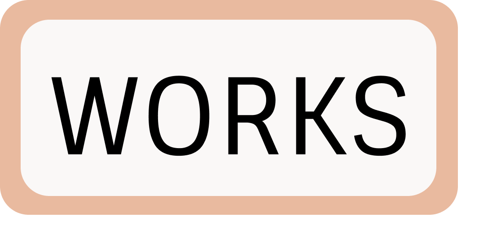
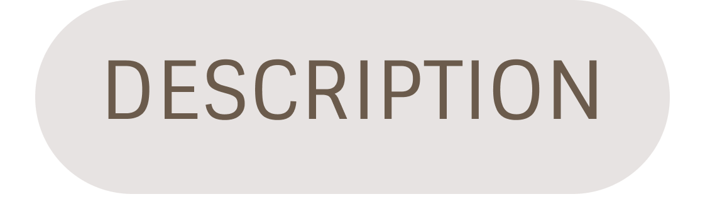
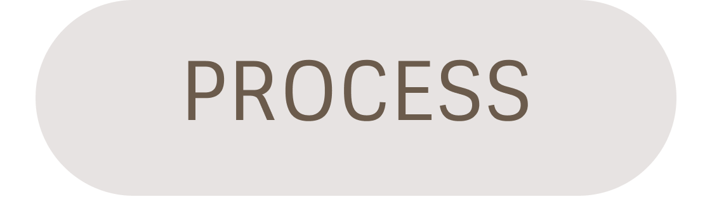
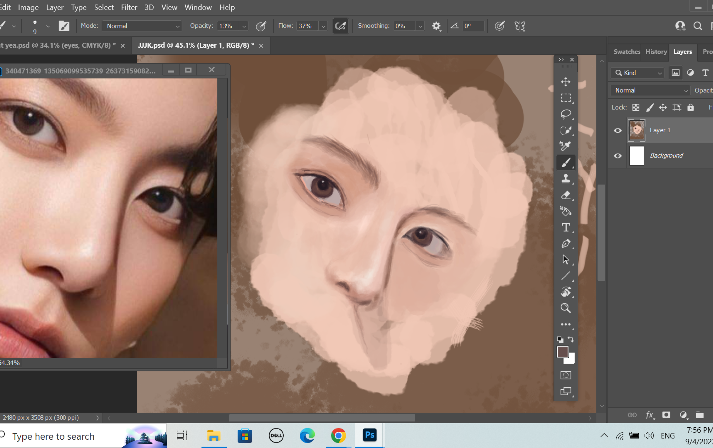
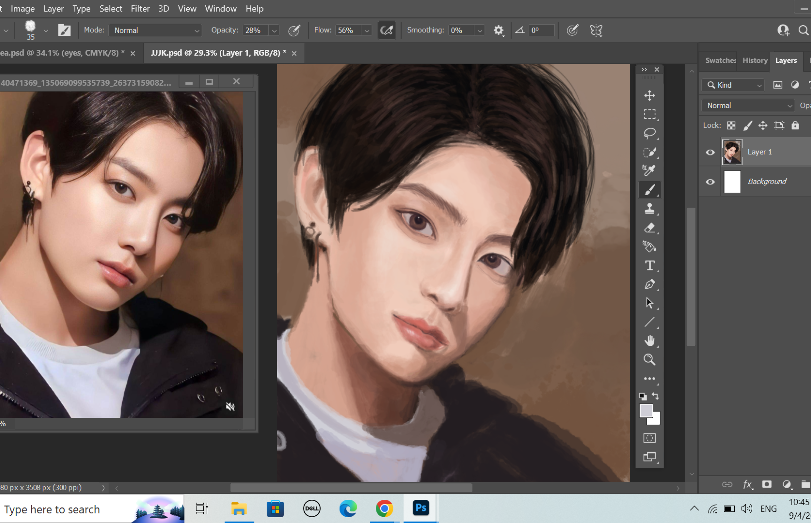

# The Role Model - Digital Illustration #
" Oh, Interesting, so this is the person that inspired our author a lot ! "

I drew my first role model using Adobe Photoshop. It is definitely not the first time to illustrate in this way and I truly enjoy it. This took me around 2 hours !

 I used the skills that I’ve been learning through studying graphic design. The brushes and strokes are all unique in this process.
I used the skills that I’ve been learning through studying graphic design. The brushes and strokes are all unique in this process.

I truly enjoy painting it and I love how the picture is slowly completing one by one.

Taadaa !
 Level of interest towards this artwork?
Rate It !
Level of interest towards this artwork?
Rate It !